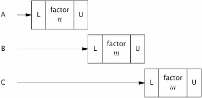

{% include JB/setup %}
{% raw %}
<div>


<a href="21021536.html" class="calibre2"></a><a name="ch02lev1sec5" class="calibre18" id="ch02lev1sec5"></a>
<h3 id="title-IDAPMXDS" class="docSection1Title">2.5. Liveness and Performance</h3>
<p class="docText1">In <tt class="calibre25">UnsafeCachingFactorizer</tt>, we introduced some caching into our factoring servlet in the hope of improving performance. Caching required some shared state, which in turn required synchronization to maintain the integrity of that state. But the way we used synchronization in <tt class="calibre25">SynchronizedFactorizer</tt> makes it perform badly. The synchronization policy for <tt class="calibre25">SynchronizedFactorizer</tt> is to <a name="iddle1474" class="calibre18" id="iddle1474"></a><a name="iddle3531" class="calibre18" id="iddle3531"></a><a name="iddle4111" class="calibre18" id="iddle4111"></a><a name="iddle4480" class="calibre18" id="iddle4480"></a>guard each state variable with the servlet object's intrinsic lock, and that policy was implemented by synchronizing the entirety of the <tt class="calibre25">service</tt> method. This simple, coarse-grained approach restored safety, but at a high price.</p>
<p class="docText1">Because <tt class="calibre25">service</tt> is <tt class="calibre25">synchronized</tt>, only one thread may execute it at once. This subverts the intended use of the servlet frameworkthat servlets be able to handle multiple requests simultaneouslyand can result in frustrated users if the load is high enough. If the servlet is busy factoring a large number, other clients have to wait until the current request is complete before the servlet can start on the new number. If the system has multiple CPUs, processors may remain idle even if the load is high. In any case, even short-running requests, such as those for which the value is cached, may take an unexpectedly long time because they must wait for previous long-running requests to complete.</p>
<p class="docText1"><a class="calibre2" href="#ch02fig01">Figure 2.1</a> shows what happens when multiple requests arrive for the synchronized factoring servlet: they queue up and are handled sequentially. We would describe this web application as exhibiting <span class="docEmphasis">poor concurrency</span>: the number of simultaneous invocations is limited not by the availability of processing resources, but by the structure of the application itself. Fortunately, it is easy to improve the concurrency of the servlet while maintaining thread safety by narrowing the scope of the <tt class="calibre25">synchronized</tt> block. You should be careful not to make the scope of the <tt class="calibre25">synchronized</tt> block <span class="docEmphasis">too</span> small; you would not want to divide an operation that should be atomic into more than one <tt class="calibre25">synchronized</tt> block. But it is reasonable to try to exclude from <tt class="calibre25">synchronized</tt> blocks long-running operations that do not affect shared state, so that other threads are not prevented from accessing the shared state while the long-running operation is in progress.</p>
<a name="ch02fig01" class="calibre18" id="ch02fig01"></a><p class="calibre21"><div class="calibre12">
<h5 class="docExampleTitle">Figure 2.1. Poor Concurrency of <tt class="calibre33">SynchronizedFactorizer</tt>.</h5>
</div></p><p class="docText1">
</p>
<p class="calibre1"> </p>
<p class="docText1"><tt class="calibre25">CachedFactorizer</tt> in <a class="calibre2" href="#ch02list08">Listing 2.8</a> restructures the servlet to use two separate <tt class="calibre25">synchronized</tt> blocks, each limited to a short section of code. One guards the check-then-act sequence that tests whether we can just return the cached result, and the other guards updating both the cached number and the cached factors. As a bonus, we've reintroduced the hit counter and added a "cache hit" counter as well, updating them within the initial <tt class="calibre25">synchronized</tt> block. Because these counters constitute shared mutable state as well, we must use synchronization everywhere they are accessed. The portions of code that are outside the <tt class="calibre25">synchronized</tt> blocks operate exclusively on local (stack-based) variables, which are not <a name="iddle2093" class="calibre18" id="iddle2093"></a>shared across threads and therefore do not require synchronization.</p>
<a name="ch02list08" class="calibre18" id="ch02list08"></a><h5 id="title-IDAIRXDS" class="docExampleTitle">Listing 2.8. Servlet that Caches its Last Request and Result.</h5><p class="calibre21"><table cellspacing="0" width="90%" border="1" cellpadding="5" class="calibre5"><tr class="calibre6"><td class="calibre28">
<pre class="calibre30">@ThreadSafe
public class CachedFactorizer implements Servlet {
    @GuardedBy("this") private BigInteger lastNumber;
    @GuardedBy("this") private BigInteger[] lastFactors;
    @GuardedBy("this") private long hits;
    @GuardedBy("this") private long cacheHits;

    public <span class="docEmphStrong">synchronized</span> long getHits() { return hits; }
    public <span class="docEmphStrong">synchronized</span> double getCacheHitRatio() {
        return (double) cacheHits / (double) hits;
    <span class="docEmphStrong">}</span>

    public void service(ServletRequest req, ServletResponse resp) {
        BigInteger i = extractFromRequest(req);
        BigInteger[] factors = null;
        <span class="docEmphStrong">synchronized (this)</span> {
            ++hits;
            if (i.equals(lastNumber)) {
                ++cacheHits;
                factors = lastFactors.clone();
            }
        }
        if (factors == null) {
            factors = factor(i);
            <span class="docEmphStrong">synchronized (this)</span>  {
                lastNumber = i;
                lastFactors = factors.clone();
            }
        <span class="docEmphStrong">}</span>
        encodeIntoResponse(resp, factors);
    <span class="docEmphStrong">}</span>
}
</pre><br class="calibre11"/>
</td></tr></table></p>
<p class="docText1"><tt class="calibre25">CachedFactorizer</tt> no longer uses <tt class="calibre25">AtomicLong</tt> for the hit counter, instead reverting to using a <tt class="calibre25">long</tt> field. It would be safe to use <tt class="calibre25">AtomicLong</tt> here, but there is less benefit than there was in <tt class="calibre25">CountingFactorizer</tt>. Atomic variables are useful for effecting atomic operations on a single variable, but since we are already using <tt class="calibre25">synchronized</tt> blocks to construct atomic operations, using two different synchronization mechanisms would be confusing and would offer no performance or safety benefit.</p>
<p class="docText1">The restructuring of <tt class="calibre25">CachedFactorizer</tt> provides a balance between simplicity (synchronizing the entire method) and concurrency (synchronizing the shortest <a name="iddle2551" class="calibre18" id="iddle2551"></a><a name="iddle2566" class="calibre18" id="iddle2566"></a><a name="iddle2583" class="calibre18" id="iddle2583"></a><a name="iddle2584" class="calibre18" id="iddle2584"></a>possible code paths). Acquiring and releasing a lock has some overhead, so it is undesirable to break down <tt class="calibre25">synchronized</tt> blocks <span class="docEmphasis">too</span> far (such as factoring <tt class="calibre25">++hits</tt> into its own <tt class="calibre25">synchronized</tt> block), even if this would not compromise atomicity. <tt class="calibre25">CachedFactorizer</tt> holds the lock when accessing state variables and for the duration of compound actions, but releases it before executing the potentially long-running factorization operation. This preserves thread safety without unduly affecting concurrency; the code paths in each of the <tt class="calibre25">synchronized</tt> blocks are "short enough".</p>
<p class="docText1">Deciding how big or small to make <tt class="calibre25">synchronized</tt> blocks may require tradeoffs among competing design forces, including safety (which must not be compromised), simplicity, and performance. Sometimes simplicity and performance are at odds with each other, although as <tt class="calibre25">CachedFactorizer</tt> illustrates, a reasonable balance can usually be found.</p>
<a name="ch02sb12" class="calibre18" id="ch02sb12"></a><p class="calibre21"><table cellspacing="0" width="90%" border="1" cellpadding="5" class="calibre5"><tr class="calibre6"><td class="calibre28">
<p class="docText1">There is frequently a tension between simplicity and performance. When implementing a synchronization policy, resist the temptation to prematurely sacriflce simplicity (potentially compromising safety) for the sake of performance.</p>
</td></tr></table></p><p class="calibre1"> </p>
<p class="docText1">Whenever you use locking, you should be aware of what the code in the block is doing and how likely it is to take a long time to execute. Holding a lock for a long time, either because you are doing something compute-intensive or because you execute a potentially blocking operation, introduces the risk of liveness or performance problems.</p>
<a name="ch02sb13" class="calibre18" id="ch02sb13"></a><p class="calibre21"><table cellspacing="0" width="90%" border="1" cellpadding="5" class="calibre5"><tr class="calibre6"><td class="calibre28">
<p class="docText1">Avoid holding locks during lengthy computations or operations at risk of not completing quickly such as network or console I/O.</p>
</td></tr></table></p><p class="calibre1"> </p>
<a href="21021536.html" class="calibre2"></a>
<p class="calibre3"> </p>

</div>

{% endraw %}

